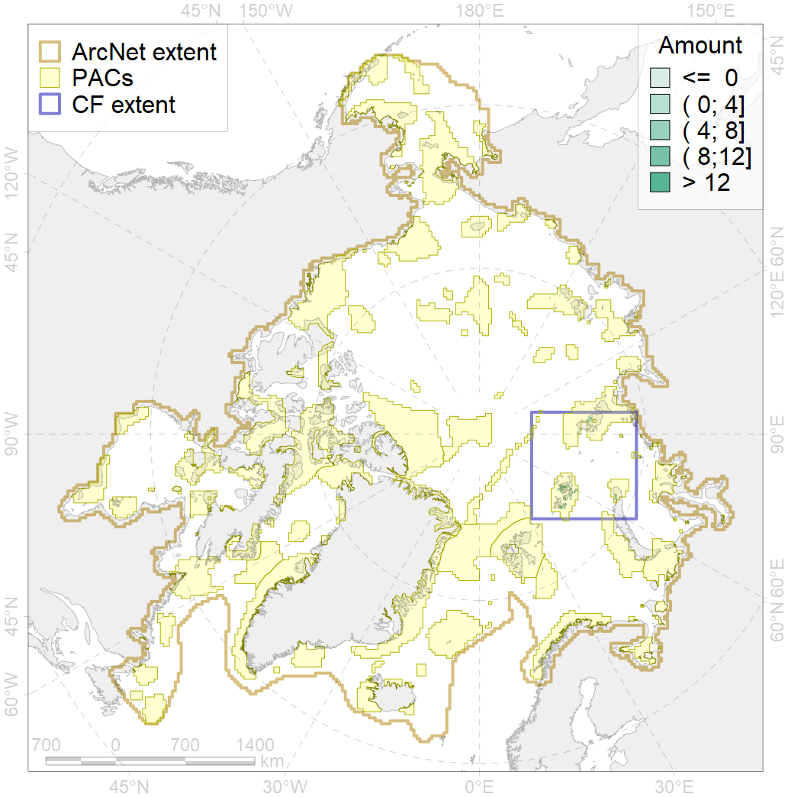
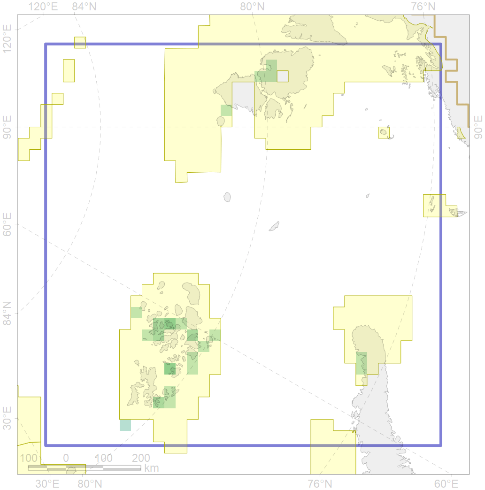

6003

| CF ID | 6003 |
| CF Name | Little Auk (Alle alle polaris) breeding colonies |
| Time Period | 1984-2001 |
| Source(s) | Franzen et al 1993, Gavrilo et al 1993, Øien 2004, Belikov & Randla 1984, Franzen et al 1993, De Korte et al 1995 |
| Seasonality | April-September |
| Depth Horizon | 0 m |
| Methodology | Field Data |
| Author Name | Gavrilo, Tertitski |
| Notes | |
| Conservation Target Set in the Scenario | 0.54 |
| Conservation Target Achieved in the Scenario | 0.967 (Scenario: 179.1%) |
| PAC ID | Proportion in the PAC | Contribution to ArcNet Target Achievement | PAC’s Contribution to the Achieved Target |
|---|---|---|---|
| 14 | 13.1% | 22.0% | 12.3% |
| 19 | 4.8% | 8.8% | 4.9% |
| 22 | 79.8% | 147.7% | 82.5% |
| inner | 97.6% | 178.5% | 99.7% |
| outer | 2.4% | 0.5% | 0.3% |